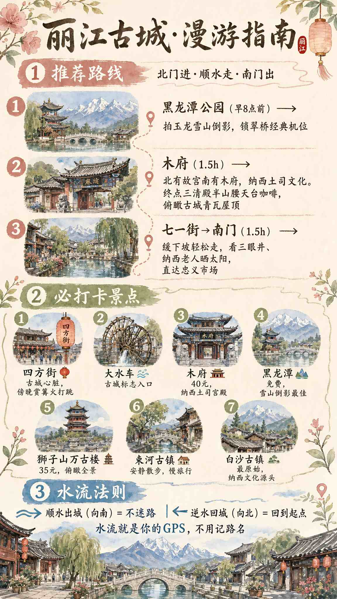
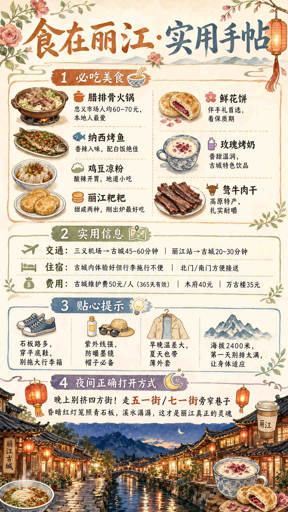
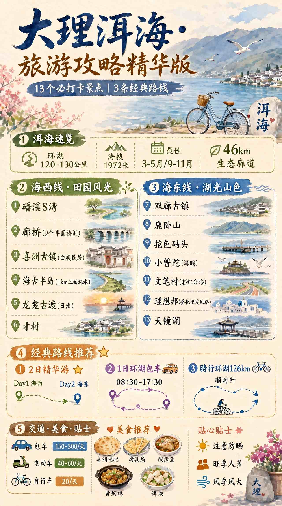
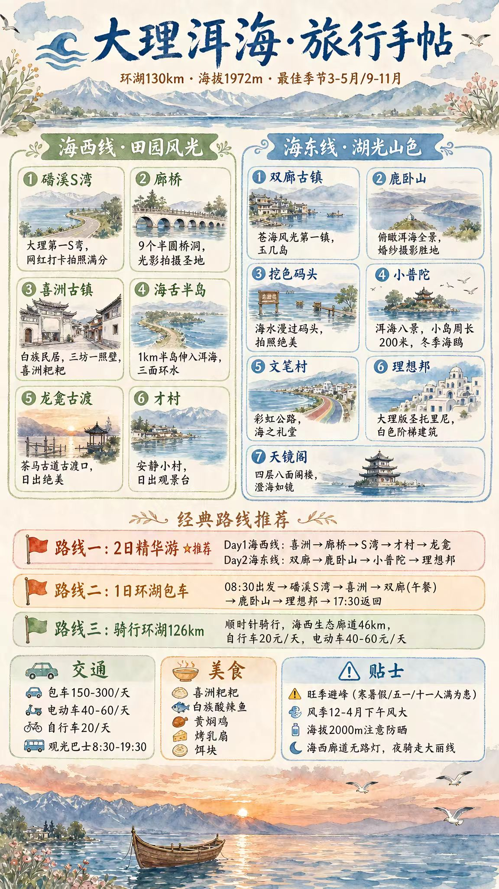
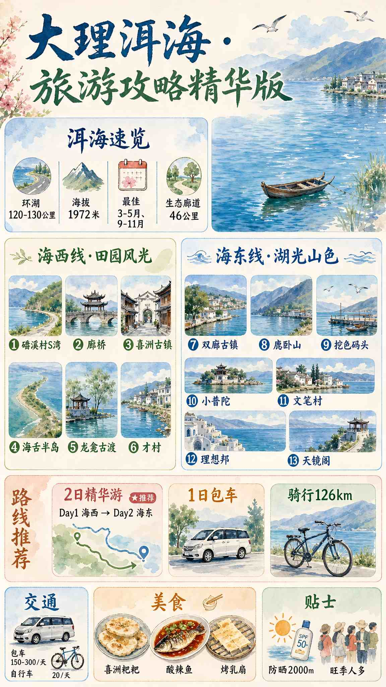
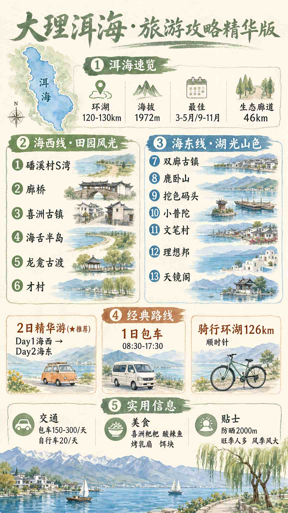
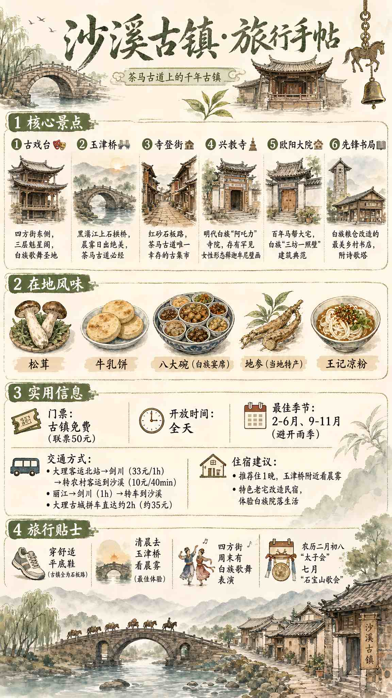
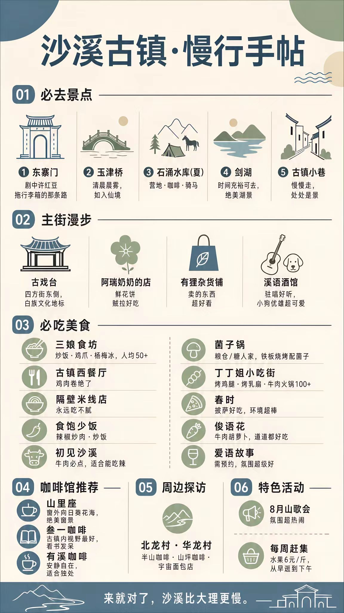

把三座城市的行走路线、必吃美食与私藏贴士，画进八张手账里。
点击任意一张可放大细看。

大水车出发，沿玉龙雪山融水顺流而下，不迷路的古城走法。

腊排骨、黑山羊、鸡豆凉粉、汽锅鸡……本地胃的丽江美食清单。

130 公里环湖路线拆解，海西到海东，每一站怎么玩一图看懂。

环海路线、拍照机位、美食地图与三日行程的完整手账版本。

同一视角的另一种编排：更侧重路线节奏与停留时间分配。

只有一天？这张帮你挑出洱海最值得的 6 个地方，不走回头路。

茶马古道上被时光遗忘的小镇，寺登街、古戏台、玉津桥怎么走。

沙溪不用赶。晨起看雾、午后喝咖啡、傍晚散步，一份慢节奏清单。
出发前的装备、交通与小提醒，帮你少走弯路。